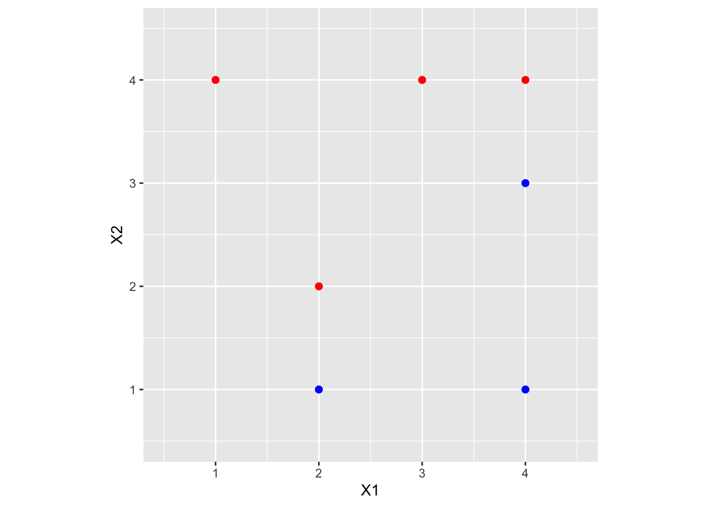
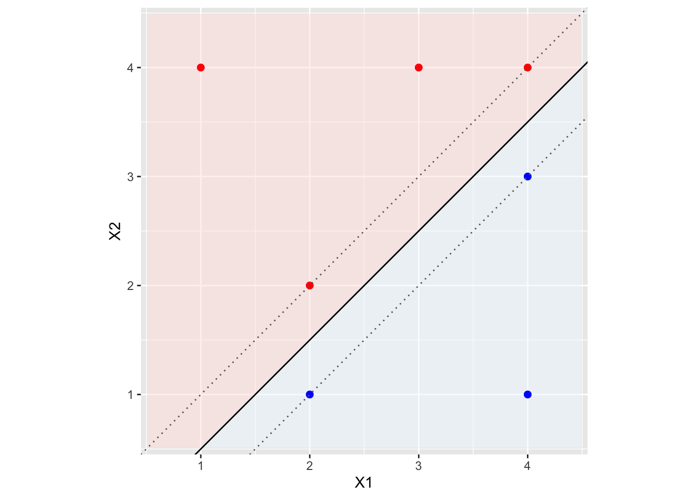
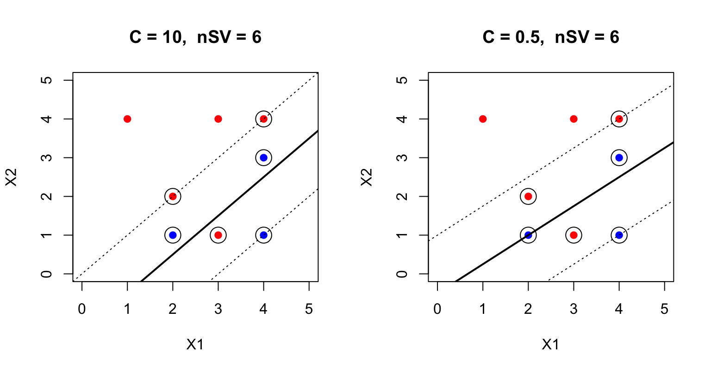
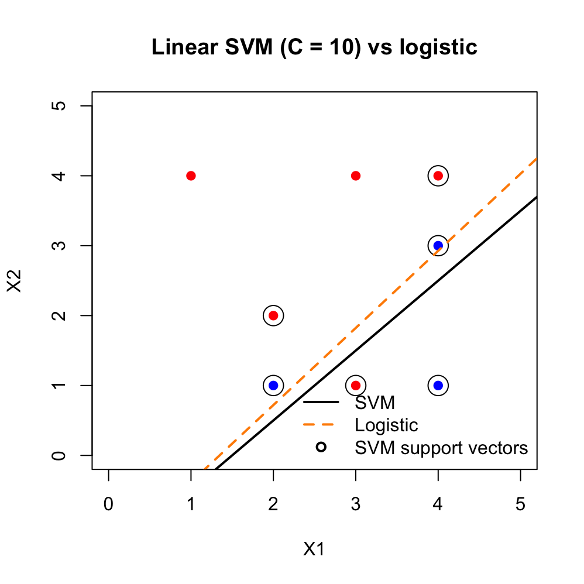

9.5 SVM Examples in R
This section is an illustration of the methods discussed in this week’s lectures. The code shows how the objects from the notes, e.g., \(\beta\), \(C\), support vectors, kernels appear in a fitted SVM.
The Python version of the example can be found here: Python Code for SVM .
The calculations use e1071::svm(). Its argument cost is the \(C\) of the notes. We keep scale = FALSE when we want coefficients and plots in the original units of \(X\). In applications one would usually scale the features.
Three comparisons:
- a hard margin versus a soft margin (what \(C\) does);
- a linear SVM versus logistic regression on the same points (who influences the fit);
- a linear kernel versus a radial kernel, with the Bayes boundary as a reference.
Linear Separable Case: Maximal Margin Classifier
We start with a small maximal-margin example (adapted from an ISLR exercise).
| X1 | X2 | Y |
|---|---|---|
| 3 | 4 | red |
| 2 | 2 | red |
| 4 | 4 | red |
| 1 | 4 | red |
| 2 | 1 | blue |
| 4 | 3 | blue |
| 4 | 1 | blue |
A scatterplot of the data:

The linear separating hyperplane has the form
\[
\beta_0 + \beta_1 X_1 + \beta_2 X_2 = 0.
\]
We compute it from a hard-margin SVM fit in e1071 by taking a very large cost:
library(e1071)
# large C approximates a hard margin
svm.toy <- svm(Y ~ ., data = toy.data, kernel = "linear", cost = 1e+05,
scale = FALSE)The coefficients of the separating line are
## X1 X2
## [1,] -1.999846 1.999693## [1] 1.00041so the optimal separating hyperplane is \[ 1 - 2X_1 + 2X_2 = 0. \]
## [1] 1.000077## [1] -0.5002816The decision boundary is the line \[ X_2 = X_1 - 0.5, \] and the maximal-margin classifier can be written \[ f(X) = X_2 - X_1 + 0.5. \] A new point \(x^*\) is assigned to the red class if \(f(x^*)>0\) and to the blue class otherwise. The margin width is \(2/\|\beta\|\):
## [1] 0.7071882
The solid line is the optimal separating hyperplane; the dotted lines are the margins. The fit used scale = FALSE and a large cost so that this is, for practical purposes, the hard-margin solution in the original coordinates. In e1071, svm.toy$index identifies the support vectors and svm.toy$rho is the intercept used in the plot (not the hard-margin midpoint formula).
## [1] 2 3 6## [1] 2 1Those indices are the support vectors: the active points on the two dotted lines. For a hard-margin fit, \(y_i f(x_i)\ge 1\) at every training point, with equality only on this subset. The printed margin \(2/\|\beta\|\) is the width between the dotted lines.
Non-Separable Data and the Role of \(C\)
Add a red point at \((X_1,X_2)=(3,1)\). The data are no longer linearly separable.
toy.data.2 <- data.frame(X1 = c(3, 2, 4, 1, 2, 4, 4, 3), X2 = c(4,
2, 4, 4, 1, 3, 1, 1), Y = as.factor(c("red", "red", "red",
"red", "blue", "blue", "blue", "red")))A finite cost is now required. Large \(C\) tries to avoid slack (narrower margin, fewer violations). Small \(C\) allows more violations and a wider margin. The plotted intercept is again -fit$rho.
plot_linear_svm <- function(fit, data, main) {
b <- as.numeric(t(fit$coefs) %*% fit$SV)
b0 <- -fit$rho
x <- data[, c("X1", "X2")]
plot(x, col = ifelse(data$Y == "blue", "blue", "red"), xlim = c(0,
5), ylim = c(0, 5), pch = 19, xlab = "X1", ylab = "X2",
main = main)
abline(a = -b0/b[2], b = -b[1]/b[2], lwd = 2)
points(x[fit$index, ], col = "black", cex = 2.4)
abline(a = (-b0 - 1)/b[2], b = -b[1]/b[2], lty = 3)
abline(a = (-b0 + 1)/b[2], b = -b[1]/b[2], lty = 3)
}
svm.hiC <- svm(Y ~ ., data = toy.data.2, kernel = "linear", cost = 10,
scale = FALSE)
svm.loC <- svm(Y ~ ., data = toy.data.2, kernel = "linear", cost = 0.5,
scale = FALSE)
par(mfrow = c(1, 2))
plot_linear_svm(svm.hiC, toy.data.2, main = paste0("C = 10, nSV = ",
sum(svm.hiC$nSV)))
plot_linear_svm(svm.loC, toy.data.2, main = paste0("C = 0.5, nSV = ",
sum(svm.loC$nSV)))
The extra red point is expensive when \(C=10\): the boundary moves toward it and the margin shrinks. When \(C=0.5\) that point is tolerated as slack, more points become support vectors, and the margin widens. This is an estimation statement, not just a geometric one. Large \(C\) is closer to empirical 0-1 risk (fit the training labels, even the noisy ones). Small \(C\) is more regularization (a smaller \(\|\beta\|\), a wider margin, more slack). The left panel weaves toward the extra point; the right panel is willing to ignore it.
Linear SVM versus Logistic Regression
On the same eight points, fit a linear logistic regression. Both methods give a line; they do not use the data in the same way.
toy.data.2$y01 <- as.numeric(toy.data.2$Y == "red")
glm.toy <- glm(y01 ~ X1 + X2, data = toy.data.2, family = binomial)
b.svm <- as.numeric(t(svm.hiC$coefs) %*% svm.hiC$SV)
b0.svm <- -svm.hiC$rho
b.glm <- coef(glm.toy)
plot(toy.data.2$X1, toy.data.2$X2, col = ifelse(toy.data.2$Y ==
"blue", "blue", "red"), pch = 19, xlim = c(0, 5), ylim = c(0,
5), xlab = "X1", ylab = "X2", main = "Linear SVM (C = 10) vs logistic")
points(toy.data.2[svm.hiC$index, c("X1", "X2")], cex = 2.4)
abline(a = -b0.svm/b.svm[2], b = -b.svm[1]/b.svm[2], lwd = 2)
abline(a = -b.glm[1]/b.glm[3], b = -b.glm[2]/b.glm[3], col = "darkorange",
lwd = 2, lty = 2)
legend("bottomright", c("SVM", "Logistic", "SVM support vectors"),
col = c("black", "darkorange", "black"), lty = c(1, 2, NA),
pch = c(NA, NA, 1), lwd = 2, bty = "n")
Logistic regression is a likelihood for \(P(Y=1\mid X)\). Every point contributes to the score equations. The SVM with hinge loss ignores points that already lie beyond the margin; only the support vectors (circled) determine the black line. The two boundaries need not agree, even when both are linear. Logistic regression still produces \(\widehat{P}(Y=1\mid X)\); the SVM does not.
Nonlinear SVM: Linear Kernel, Radial Kernel, Bayes Rule
The mixture data from ESL are not linearly separable in a way that matches the Bayes boundary (the red dashed \(P(Y=1\mid X)=1/2\) contour). A linear SVM can only draw a line. A radial kernel can bend.
library(mda)
data(ESL.mixture)
px1 <- ESL.mixture$px1
px2 <- ESL.mixture$px2
mix <- data.frame(X1 = ESL.mixture$x[, 1], X2 = ESL.mixture$x[,
2], y = factor(ESL.mixture$y))
prob <- ESL.mixture$prob
xgrid <- expand.grid(X1 = px1, X2 = px2)
svm.lin <- svm(y ~ ., data = mix, kernel = "linear", cost = 10,
scale = FALSE)
svm.rad <- svm(y ~ ., data = mix, kernel = "radial", cost = 5,
scale = FALSE)
plot_mixture <- function(fit, main) {
dec <- predict(fit, xgrid, decision.values = TRUE)
z <- attributes(dec)$decision
yhat <- predict(fit, xgrid)
plot(xgrid, col = ifelse(yhat == levels(mix$y)[2], "bisque",
"cadetblue1"), pch = 20, cex = 0.2, xlab = "x1", ylab = "x2",
main = main)
points(mix$X1, mix$X2, col = ifelse(mix$y == 1, "darkorange",
"deepskyblue"), pch = 19)
contour(px1, px2, matrix(z, length(px1), length(px2)), levels = 0,
add = TRUE, lwd = 2)
contour(px1, px2, matrix(prob, length(px1), length(px2)),
levels = 0.5, add = TRUE, col = "red", lty = 2, lwd = 2)
}
par(mfrow = c(1, 2))
plot_mixture(svm.lin, "Linear kernel, C = 10")
plot_mixture(svm.rad, "Radial kernel, C = 5")
The red dashed curve is the Bayes boundary. The linear kernel cannot track it. The radial kernel can, but only for a reasonable \(C\) (and kernel width). That is the point of this figure: the kernel changes the class of boundaries, \(C\) changes how hard we fit within that class.
Tuning \(C\) by Cross-Validation
\(C\) is a regularization parameter. We choose it by cross-validation, not by looking at the training plot. e1071::tune() does a grid search and returns the CV error. The radial kernel also has a width parameter gamma (large gamma is a narrow kernel).
set.seed(1)
tune.lin <- tune(svm, y ~ ., data = mix, kernel = "linear", scale = FALSE,
ranges = list(cost = 2^seq(-3, 5, by = 1)))
tune.lin$best.parameters## cost
## 2 0.25
set.seed(1)
tune.rad <- tune(svm, y ~ ., data = mix, kernel = "radial", scale = FALSE,
ranges = list(cost = c(0.5, 1, 5, 10), gamma = c(0.5, 1,
2)))
tune.rad$best.parameters## cost gamma
## 7 5 1## [1] 0.165Read the linear plot as you would a ridge CV curve: very small \(C\) underfits (wide margin, too much slack), very large \(C\) starts to overfit the training labels. The “best” \(C\) is the one with the smallest estimated prediction error, not the prettiest training margin.
If you already use caret in the course, the same idea can be written as train(..., method = "svmRadial"), where C is \(C\) and sigma is the radial width. What matters is the CV curve, not the wrapper.